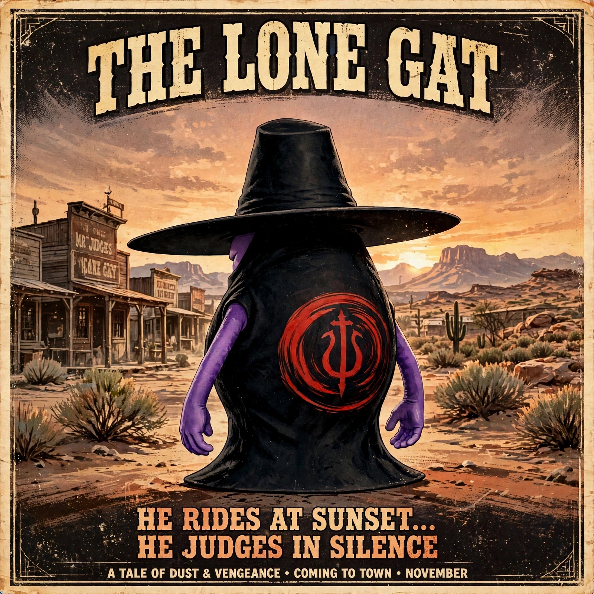

세로(Sero)
Kmon팀의 리더(저승사자)

Kmon의 존재들을 하나씩 만나 보세요.
당신에게 필요한 특별한 힘,
KMON 카드에서 만나보세요.
캐릭터 순서 · NORMAL → RARE → EPIC → LEGEND
요괴 : 동자
악귀 : 빼빼아귀
요괴 : 동녀
악귀 : 물귀신
Kmon의 존재들을 하나씩 만나 보세요.
악귀 : 달걀귀신
Kmon팀소속, 세자매의 막내(처녀귀신)
Kmon팀소속, 몽달귀신(총각귀신)
악귀 : 뚱보아귀
Kmon팀의 리더(저승사자)
처녀귀신 세자매의 둘째인 체리는 귀여운 외모와 공주병 기질을 가진 사랑스러운 귀신이다. 언제나 자신이 가장 예쁘고 특별하다고 생각하며 관심과 칭찬을 즐긴다. Kmon의 팀원으로서 다른 네 명의 팀원 사이를 이어주는 가교 역할을 하며, 팀의 조화와 화합에 중요한 역할을 한다.
Kmon팀소속, 세자매의 맏언니(처녀귀신)